NetLogo GbCC Converter
GbCC 2.0
Create a NetLogo Model
Step 1:
Create a model using
NetLogo
. Save your model as a .nlogo file.
(Note: Click on each icon for more information.)
Check out the following resources:
NetLogo Dictionary
NetLogo Programming Guide
NetLogo GbCC Dictionary
NetLogo GbCC Programming Guide
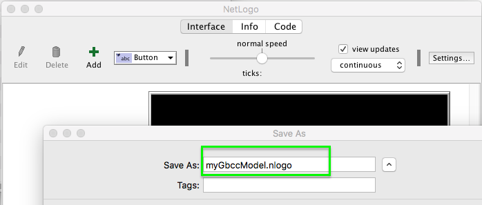
Convert NetLogo model to GbCC Model
Step 2:
Choose settings for your GbCC Model.
Allow students to have Tabs.
Allow teachers to control students' access to their View and Tabs.
Allow canvases to have multiple layers.
Allow users to select multiple canvases.
Allow canvases to act as forever buttons.
Allow users the option to listen or ignore.
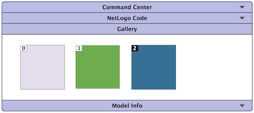
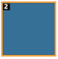 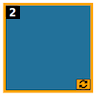
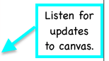
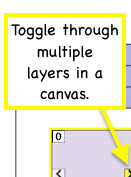 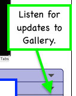 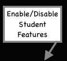 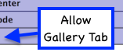
Step 3:
Choose the .nlogo file to upload.
Filename:
x Please use a .nlogo file.
Step 4:
Download the .zip file.
Upload
Create a Website for your GbCC Model.
Step 6:
Create a
Dropbox
account and save your .zip file.
Save your .zip file, in your local Dropbox folder.
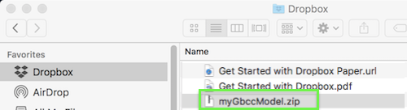
Find your .zip file, in the Dropbox website.
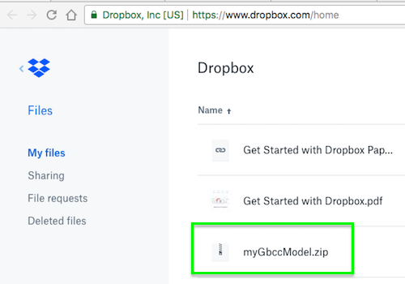
Step 7:
Get a
Heroku
account. Follow instructions to create and deploy a NodeJS app.
Select "Node.js" and press the Create New App button.
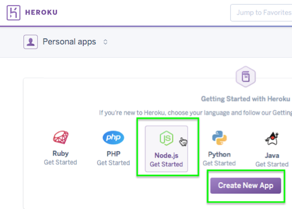
Choose a unique name and press the Create App button.
Select Dropbox as the deployment method and press the Connect to Dropbox button.
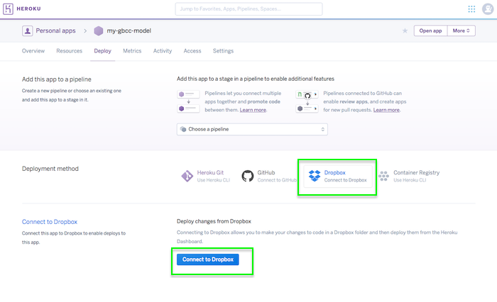
Sign in to Dropbox.
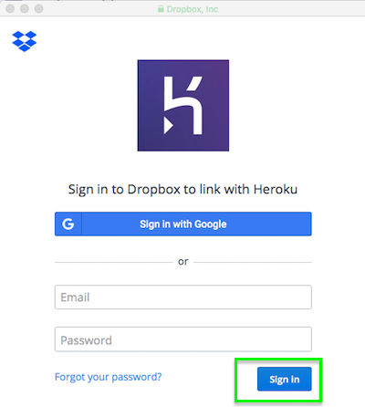
Allow Heroku access to Dropbox.
Unzip your myGbccModel.zip file to create a myGbccModel folder. Copy the contents of the myGbccModel folder to the Apps > Heroku > my-gbcc-model folder.
Deploy your app by pressing the Deploy button. Open the app by pressing the Open App button.
Step 8:
Go to the url for your model.
Email address:
Email the url and passcode
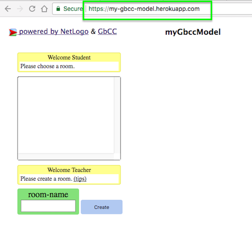
Troubleshoot
If there is an error like
There is already a global variable called STEP-SIZE
, then comment out that global variable.
Other
NetLogo GbCC Project Site
NetLogo GbCC 1.0 Site
NetLogo GbCC 2.0 Site
Converter 2.0 Source on Github
c_remmler@yahoo.com